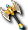

一般｜異常狀態防禦｜天上－善屬性｜天上－惡屬性
迪姆萊特系｜雷歐加爾特｜斯科爾菲吉
名稱為橙色的物品可以附魔。另外，未鑑定名稱是該道具在未鑑定狀態下的名稱。同等級的裝備依單手→雙手的順序記載。雙手武器在爆擊時攻擊力為3倍。(部分技能例外)
提供情報或編輯請求，請到情報提供公佈欄、編輯公佈欄。
一般
| 名稱 | 價格 | 限制 | 職業 | Wei | 取得方式 |
 修練用斧頭 修練用斧頭 | 1,000 | Lv0 | 戰修盜騎阿聖魔預吟 | 3 | |
| 能力 | wiki 沒寫 |
| 備註 | 戰士訓練時使用的斧。沒有經過提升能力的加工 |
| 名稱 | 價格 | 限制 | 職業 | Wei | 取得方式 |
 石斧 石斧 | 3,600 | Lv1 | 戰修盜騎阿聖魔預吟 | 3 | 米魯里斯：雜貨商、盧亞斯：鐵匠、盧亞斯：雜貨商、斯歐米：雜貨商、魔界村：雜貨商、魯克西翁：鐵匠、魯克西翁：雜貨商、 摩斯、奇奇 摩斯、奇奇 |
| 能力 | 攻1～31 |
| 備註 | 單手斧 |
| 名稱 | 價格 | 限制 | 職業 | Wei | 取得方式 |
 凱爾斧未鑑定名稱：斧 凱爾斧未鑑定名稱：斧 | 31,000 | Lv21 | 戰修盜騎阿聖魔預吟 | 7 | 庫納、摩斯戰士、 小魔瓜、[小魔瓜]、 小魔瓜、[小魔瓜]、 寶箱（深褐） 寶箱（深褐） |
| 能力 | 攻2～45、DAM+4、HP+10 |
| 備註 | 單手斧 |
| 名稱 | 價格 | 限制 | 職業 | Wei | 取得方式 |
 喪失之斧 喪失之斧 | - | Lv21 | 戰修盜騎阿聖魔預吟 | 10 | 盧亞斯：城商人 |
| 能力 | 攻46～47、DAM+5、HIT-5 |
| 備註 | 單手斧 死亡時掉落地面 |
| 名稱 | 價格 | 限制 | 職業 | Wei | 取得方式 |
| 遺忘之斧 | 45,000 | Lv21 | 戰修盜騎阿聖魔預吟 | 10 | 伊卡洛斯：鐵匠、巴迪、阿克特、 氣球 氣球 |
| 能力 | 攻46～47、DAM+5、HIT-5 |
| 備註 | 單手斧 死亡時消失 |
| 名稱 | 價格 | 限制 | 職業 | Wei | 取得方式 |
| 青銅斧 | 51,600 | Lv25 | 戰修盜騎阿聖魔預吟 | 5 | 盧亞斯：鐵匠、魯克西翁：鐵匠、 YOYO諾肯、摩斯戰士 YOYO諾肯、摩斯戰士 |
| 能力 | 攻11～46 |
| 備註 | 單手斧 銅製的小斧。雖然重但有破壞力 |
| 名稱 | 價格 | 限制 | 職業 | Wei | 取得方式 |
| 米可斧未鑑定名稱：斧 | 35,000 | Lv30 | 戰修盜騎阿聖魔預吟 | 4 |  海馬騎士、 海馬騎士、 海馬法師、 海馬法師、 達伊特倫、魯克西翁森5（OP附魔） 達伊特倫、魯克西翁森5（OP附魔） |
| 能力 | 攻10～64、DAM+6、HIT-3、HP+10 |
| 備註 | 單手斧 |
| 名稱 | 價格 | 限制 | 職業 | Wei | 取得方式 |
 肯比歐斯斧(舊) 肯比歐斯斧(舊) | 890,000 | Lv31,FLv21 | 戰修盜騎阿聖魔預吟 | 17 | 絕版 |
| 能力 | 攻30～180隨機(BaseDAM54～66、DAM+7～12、STR+0～4、SP+26～30) |
| 備註 | 雙手斧 |
| 名稱 | 價格 | 限制 | 職業 | Wei | 取得方式 |
| 巨型戰斧 | Lv31 | 戰修盜騎阿聖魔預吟 | 30 |  寵物玩偶 寵物玩偶 | |
| 能力 | 攻54～57、DAM+20、HIT-10、HP+80、SP+40 |
| 備註 | 單手斧 斧，雖然重但有破壞力的大型斧 |
| 名稱 | 價格 | 限制 | 職業 | Wei | 取得方式 |
| 鐵斧 | 237,000 | Lv45 | 戰修盜騎阿聖魔預吟 | 10 | 盧亞斯：鐵匠、卡雷瓦拉：鐵匠、 阿英、克雷布塔 阿英、克雷布塔 |
| 能力 | 攻22～102、DAM+2、HIT-5 |
| 備註 | 單手斧 鐵製的大斧。難以使用但威力絕大 |
| 名稱 | 價格 | 限制 | 職業 | Wei | 取得方式 |
| 熊斧未鑑定名稱：斧 | 93,500 | Lv48 | 戰修盜騎阿聖魔預吟 | 8 |  九吋釘、船長、海馬騎士、［海馬騎士］ 九吋釘、船長、海馬騎士、［海馬騎士］ |
| 能力 | 攻27～125、DAM+8、HIT-6、HP+20 |
| 備註 | 單手斧 |
| 名稱 | 價格 | 限制 | 職業 | Wei | 取得方式 |
| 金斧 | 570,000 | Lv51,FLv10 | 戰修盜騎阿聖魔預吟 | 17 |  絨毛鼠、涅多帕姆、a 絨毛鼠、涅多帕姆、a |
| 能力 | 攻50～160、DAM+5、HIT-5 |
| 備註 | 單手斧 以黃金打造的斧 |
| 名稱 | 價格 | 限制 | 職業 | Wei | 取得方式 |
| 金斧 | 190.000 | Lv50 | 戰修盜騎阿聖魔預吟 | 34 | 布吉、船長、 伐木諾肯 伐木諾肯 |
| 能力 | 攻50～160、DAM+5、HIT-5 |
| 備註 | 單手斧 以黃金打造的斧 |
| 名稱 | 價格 | 限制 | 職業 | Wei | 取得方式 |
| 卡隆斧未鑑定名稱：斧 | 100,000 | Lv60 | 戰修盜騎阿聖魔預吟 | 12 | 海馬法師、強力克雷布塔、寶箱（金）、盧亞斯森6 |
| 能力 | 攻1～220、HP+30、DAM+10、HIT-9 |
| 備註 | 單手斧 |
| 名稱 | 價格 | 限制 | 職業 | Wei | 取得方式 |
| 肯比歐斯斧(61) | 890,000 | Lv61,FLv11 | 戰修盜騎阿聖魔預吟 | 17 | Q:肯比歐斯討伐 |
隨機(BaseDAM50、DAM+6、STR0、SP22)
肯比歐斯區獎勵道具。備註：單手斧(標示為雙手斧)
| 名稱 | 價格 | 限制 | 職業 | Wei | 取得方式 |
| 遺忘的巨斧 | 450,000 | Lv61,FLv21 | 戰修盜騎阿聖魔預吟 | 20 | 格里德、 凱森 凱森 |
| 能力 | 攻56～60、DAM+5、HIT-12 |
| 備註 | 雙手斧 死亡時消失 |
| 名稱 | 價格 | 限制 | 職業 | Wei | 取得方式 |
 巨斧 巨斧 | 1,050,000 | Lv61 | 戰修盜騎阿聖魔預吟 | 20 | 澤皮拉(紅) |
| 能力 | 攻20～260、DAM+5、HIT-15 |
| 備註 | 雙手斧 以沉重鐵打造的巨大斧頭 |
| 名稱 | 價格 | 限制 | 職業 | Wei | 取得方式 |
 覺醒武器 覺醒武器 | 0 | Lv61 | 戰修盜騎阿聖魔預吟 | 2010回歸箱 | |
| 能力 | 攻 |
| 備註 | 30天內可覺醒被封印能力的武器。期間過後會消失 |
| 名稱 | 價格 | 限制 | 職業 | Wei | 取得方式 |
| 巨斧 | 400,000 | Lv70 | 戰修盜騎阿聖魔預吟 | 40 | 班克斯、凱羅斯、船長 |
| 能力 | 攻20～260、DAM+5、HIT-15 |
| 備註 | 雙手斧 以沉重鐵打造的巨大斧頭 |
| 名稱 | 價格 | 限制 | 職業 | Wei | 取得方式 |
| 伊卡魯斯之斧 | ？ | Lv71,FLv5 | 戰修盜騎阿聖魔預吟 | 20 | |
| 能力 | 攻54～58、DAM+5、HIT2、HP+10 |
| 備註 | 從伊卡洛斯的洛古爾那裡得到的斧 |
| 名稱 | 價格 | 限制 | 職業 | Wei | 取得方式 |
| 泰特拉之斧 | 2,000,000 | Lv71 | 戰修盜騎阿聖魔預吟 | 0 | Q:泰特拉武器 |
| 能力 | 攻1～350 |
| 備註 | 雙手斧 只能用專用捲軸附魔 |
| 名稱 | 價格 | 限制 | 職業 | Wei | 取得方式 |
| 命運之斧 | 452,000 | Lv71,FLv15 | 戰修盜騎阿聖魔預吟 | 18 | Q:扭曲命運的武器 |
| 能力 | 攻1～357、DAM+10、HIT-5、HP50、STR+5 |
| 備註 | 雙手斧。領悟自我並試圖開拓命運者的斧。擁有某種魔力的特殊力量。 |
| 名稱 | 價格 | 限制 | 職業 | Wei | 取得方式 |
| 肯比歐斯斧(新) | 890,000 | Lv81,FLv21 | 戰修盜騎阿聖魔預吟 | 17 | Q:肯比歐斯討伐 |
| 能力 | 隨機(BaseDAM63~66、DAM+10或HIT+9~12、STR0~4、SP20~30) |
| 備註 | 單手斧 |
| 名稱 | 價格 | 限制 | 職業 | Wei | 取得方式 |
| 大斧 | 110,000 | Lv81,FLv21 | 戰修盜騎阿聖魔預吟 | 20 | 弗里克爾(青)、 火焰飛龍(附魔)、［長老迪斯］(附魔)、 火焰飛龍(附魔)、［長老迪斯］(附魔)、 彩券、裝備彩券 彩券、裝備彩券 |
| 能力 | 攻76～288、DAM+5、HIT-5 |
| 備註 | 單手斧 |
| 名稱 | 價格 | 限制 | 職業 | Wei | 取得方式 |
| 布羅巴 | 120,000 | Lv85,FLv21 | 戰修盜騎阿聖魔預吟 | 23 | 格蘭帕伊斯(青)、[長老迪斯](附魔)、火焰飛龍(附魔)、裝備彩券 |
| 能力 | 攻58～326、DAM+5、HIT-20 |
| 備註 | 雙手斧 |
| 名稱 | 價格 | 限制 | 職業 | Wei | 取得方式 |
 氣之斧 氣之斧 | 2,000,000 | Lv91,FLv31 | 戰修盜騎阿聖魔預吟 | 20 | Q:光環武器 |
| 能力 | 攻63～73、DAM+5、HIT-5、STR+5 |
| 備註 | 雙手斧 Q:火焰武器 |
| 名稱 | 價格 | 限制 | 職業 | Wei | 取得方式 |
 極限之斧 極限之斧 | 2,000,000 | Lv98,FLv50 | 戰修盜騎阿聖魔預吟 | 40 | Q:極限武器 |
| 能力 | 攻1～580、DAM+7 |
| 備註 | 雙手斧。據說只有克服了無數困難的真正勇者才能獲得的傳說之斧。但是以目前的狀態無法充分發揮其力量。不可染色 |
| 名稱 | 價格 | 限制 | 職業 | Wei | 取得方式 |
| 極限之斧(覺醒) | 2,000,000 | Lv98,FLv50 | 戰修盜騎阿聖魔預吟 | 40 | Q:極限武器 |
| 能力 | 攻1～580、DAM+12、HIT+5、HP+200、MP+100、SP+100 |
| 備註 | 雙手斧 1個月後消失。只能用專用捲軸附魔。據說只有克服了無數困難的真正勇者才能獲得的傳說之斧。擁有驚人的能力。 |
異常狀態防禦
| 名稱 | 價格 | 限制 | 職業 | Wei | 取得方式 |
 坎夏斯斧 坎夏斯斧 | 1,500,000 | Lv95,FLv35 | 戰修盜騎阿聖魔預吟 | 26 | - |
| 能力 | 攻32～346、DAM+22、HIT-12、HP-130、SP-50 |
| 備註 | 可防禦混亂與中毒異常狀態的武器。 單手斧。為被詛咒的武器附魔異常狀態防禦能力加以強化。混亂防禦(PCount:150)中毒防禦(PCount:150) |
| 名稱 | 價格 | 限制 | 職業 | Wei | 取得方式 |
| 迪捷雷德之斧 | 2,300,000 | Lv95,FLv35 | 戰修盜騎阿聖魔預吟 | 26 | Q:赫爾西翁製造 |
| 能力 | 攻38～380、DAM+6、HIT-20、SAR+1、STR+2、CON+3、HP+180、SP+70 |
| 備註 | 混亂防禦(PCount:200) 雙手斧。據說是反抗神的天使們所使用的斧。蘊含著美麗的天使之淚。不可染色 |
| 名稱 | 價格 | 限制 | 職業 | Wei | 取得方式 |
| 蒂亞雷德之斧 | 2,750,000 | Lv97,FLv45 | 戰修盜騎阿聖魔預吟 | 20 | Q:赫爾西翁升級 |
| 能力 | 攻40～400、DAM+7、HIT-15、SAR+1、STR+3、CON+4、HP+200、SP+90 |
| 備註 | 混亂防禦(PCount:200) 雙手斧。強化迪捷雷德之斧而成的斧。不可染色 |
| 名稱 | 價格 | 限制 | 職業 | Wei | 取得方式 |
| 終極之斧 | 2,000,000 | Lv99,FLv51 | 戰修盜騎阿聖魔預吟 | 27 | Q:究極武器 |
| 能力 | 攻50～550、DAM+10、STR3、CON3、DEX3、HP+30、MP+30、SP+100 critical 1% |
| 備註 | 中毒防禦(PCount:50) 雙手斧。地上系最強的斧。最強戰士的證明。不可染色 |
| 名稱 | 價格 | 限制 | 職業 | Wei | 取得方式 |
| 終極之斧-壹式 | 2,500,000 | Lv99,FLv55 | 戰修盜騎阿聖魔預吟 | 28 | Q:終極武器升級 |
| 能力 | 攻53～552、DAM+11、STR3、CON4、DEX3、HP+40、MP+30、SP+100 critical 2% |
| 備註 | 中毒防禦(PCount:60) 雙手斧。地上系最強的斧。最強戰士的證明。單一升級狀態。不可染色 |
| 名稱 | 價格 | 限制 | 職業 | Wei | 取得方式 |
| 終極之斧-貳式 | 3,000,000 | Lv99,FLv61 | 戰修盜騎阿聖魔預吟 | 29 | Q:終極武器升級 |
| 能力 | 攻56～554、DAM+12、STR4、CON4、DEX3、HP+50、MP+30、SP+100 critical 3% |
| 備註 | 中毒防禦(PCount:70) 雙手斧。地上系最強的斧。最強戰士的證明。雙重升級狀態。不可染色 |
天上－善屬性
| 名稱 | 價格 | 限制 | 職業 | Wei | 取得方式 |
| 帕爾塞斯斧 | 10,000 | Lv91,Flv31TLv1,BLv1 | 戰修盜騎阿聖魔預吟 | 24 | 斯坎達倫6 |
| 能力 | 攻60～66、DAM+6、HIT-6、STR+4 |
| 備註 | 雙手斧 善屬性專用 |
| 名稱 | 價格 | 限制 | 職業 | Wei | 取得方式 |
| 帕爾塞斯斧 | 10,000 | Lv91,FLv31TLv11,BLv11 | 戰修盜騎阿聖魔預吟 | 24 | 解除封印 |
| 能力 | 攻60～66、DAM+6、HIT-6、STR+5、SP+100 |
| 備註 | 雙手斧 善屬性專用 |
帕爾塞斯斧 升級
| 1階段 | 2階段 | 3階段 | 附魔值 | | |
| 名稱 | 價格 | 限制 | 職業 | Wei | 取得方式 |
| 庫修隆斧 | 20,000 | Lv93,FLv41TLv31,BLv31 | 戰修盜騎阿聖魔預吟 | 26 | 歐佩爾7 |
攻62～68、DAM+6、HIT-7、STR5
備註：雙手斧 善屬性專用
| 名稱 | 價格 | 限制 | 職業 | Wei | 取得方式 |
| 庫修隆斧 | 20,000 | Lv93,FLv41TLv41,BLv41 | 戰修盜騎阿聖魔預吟 | 26 | 解除封印 |
| 能力 | 攻62～68、DAM+6、HIT-7、SP+100、STR6(未標示) |
| 備註 | 雙手斧 善屬性專用 |
庫修隆斧 升級
| 1階段 | 2階段 | 3階段 | 4階段 | 5階段 | 附魔值 |
| 名稱 | 價格 | 限制 | 職業 | Wei | 取得方式 |
 盧米納斧 | 30,000 | Lv95,FLv51TLv61,BLv61 | 戰修盜騎阿聖魔預吟 | 28 | |
攻64～70、DAM+6、HIT-8、STR+6
備註：雙手斧 善屬性專用斧
| 名稱 | 價格 | 限制 | 職業 | Wei | 取得方式 |
| 盧米納斧 | 30,000 | Lv95,FLv51TLv71,BLv71 | 戰修盜騎阿聖魔預吟 | 28 | 解除封印 |
| 能力 | 攻64～70、DAM+6、HIT-8、STR+7、SP+100 |
| 備註 | 雙手斧 善屬性專用 |
盧米納斧 升級
| 1階段 | 2階段 | 3階段 | 4階段 | 5階段 | 附魔值 |
| 名稱 | 價格 | 限制 | 職業 | Wei | 取得方式 |
| 里希涅斧 | 40,000 | Lv97,FLv61TLv81,BLv81 | 戰修盜騎阿聖魔預吟 | 30 | |
[3階段封印時]攻62～68、DAM+8、HIT+2、STR+5
[2階段封印時]攻64～70、DAM+9、HIT-2、STR+6
備註：雙手斧 善屬性專用
| 名稱 | 價格 | 限制 | 職業 | Wei | 取得方式 |
| 里希涅斧 | 40,000 | Lv97,FLv61TLv91,BLv91 | 戰修盜騎阿聖魔預吟 | 30 | 解除封印 |
| 能力 | - |
| 備註 | 雙手斧 善屬性專用 |
里希涅斧 升級
天上－惡屬性
| 名稱 | 價格 | 限制 | 職業 | Wei | 取得方式 |
 斯坎達倫斧 斯坎達倫斧 | 10,000 | Lv91,Flv31TLv1,BLv1 | 戰修盜騎阿聖魔預吟 | 24 | 帕爾塞斯６ |
| 能力 | 攻60～64、DAM+6、HIT-6、STR+4 |
| 備註 | 雙手斧 惡屬性專用 |
| 名稱 | 價格 | 限制 | 職業 | Wei | 取得方式 |
| 斯坎達倫斧 | 10,000 | Lv91,Flv31TLv11,BLv11 | 戰修盜騎阿聖魔預吟 | 24 | 解除封印 |
| 能力 | 攻60～64、DAM+6、HIT-6、STR+5、SP+100 |
| 備註 | 雙手斧 惡屬性專用 |
斯坎達龍斧 升級
| 1階段 | 2階段 | 3階段 | 附魔值 | | |
| 名稱 | 價格 | 限制 | 職業 | Wei | 取得方式 |
| 歐佩爾斧 | 20,000 | Lv93,FLv41TLv31,BLv31 | 戰修盜騎阿聖魔預吟 | 26 | |
攻62～68、DAM+6、HIT-7、STR+5
備註：雙手斧 惡屬性專用
| 名稱 | 價格 | 限制 | 職業 | Wei | 取得方式 |
| 歐佩爾斧 | 20,000 | Lv93,FLv41TLv41,BLv41 | 戰修盜騎阿聖魔預吟 | 26 | 解除封印 |
| 能力 | 攻62～68、DAM+6、HIT-7、SP+100 |
| 備註 | 雙手斧 惡屬性專用 |
歐佩爾斧 升級
| 1階段 | 2階段 | 3階段 | 4階段 | 5階段 | 附魔值 |
| 名稱 | 價格 | 限制 | 職業 | Wei | 取得方式 |
 格赫那斧 格赫那斧 | 30,000 | Lv95,FLv51TLv61,BLv61 | 戰修盜騎阿聖魔預吟 | 28 | |
攻64～70、DAM+6、HIT-8、STR+6
備註：雙手斧 惡屬性專用
| 名稱 | 價格 | 限制 | 職業 | Wei | 取得方式 |
| 格赫那斧 | 30,000 | Lv95,FLv51TLv71,BLv71 | 戰修盜騎阿聖魔預吟 | 28 |  阿瑟拉、解除封印 阿瑟拉、解除封印 |
| 能力 | 攻64～70、DAM+6、HIT-8、SP+100(標示) |
| 備註 | 雙手斧 惡屬性專用 |
格赫那斧 升級
| 1階段 | 2階段 | 3階段 | 4階段 | 5階段 | 附魔值 |
| 名稱 | 價格 | 限制 | 職業 | Wei | 取得方式 |
| 戴莫尼翁斧 | 40,000 | Lv97,FLv61TLv81,BLv81 | 戰修盜騎阿聖魔預吟 | 30 | |
[3階段封印時]攻62～68、DAM+8、HIT+2、STR+5
備註：雙手斧 惡屬性專用
| 名稱 | 價格 | 限制 | 職業 | Wei | 取得方式 |
| 戴莫尼翁斧 | 40,000 | Lv97,FLv61TLv91,BLv91 | 戰修盜騎阿聖魔預吟 | 30 | 解除封印 |
| 能力 | Attack 66-72 DAM+6 HIT-9 STR+8 SP+100 |
戴莫尼翁斧 升級